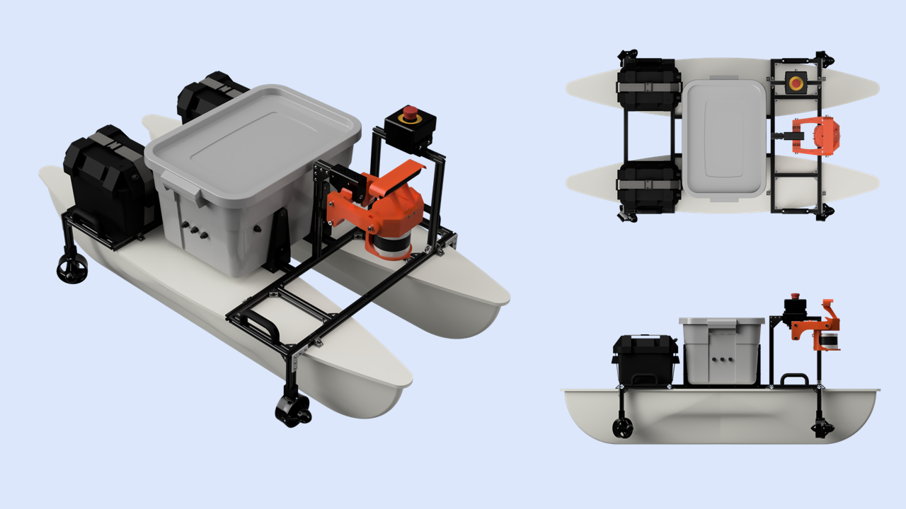
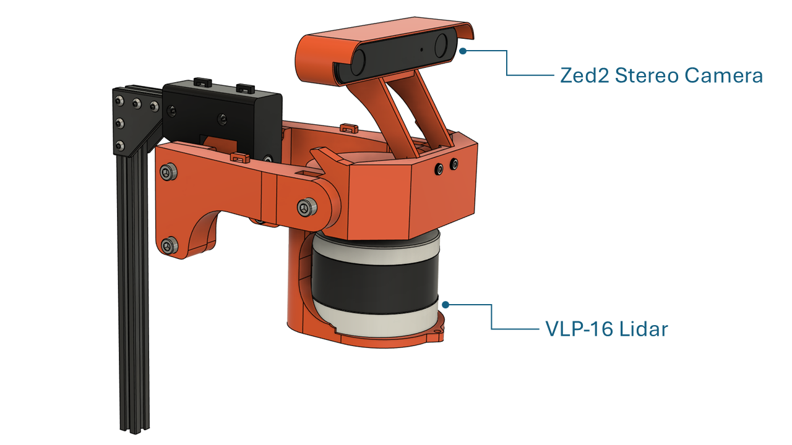
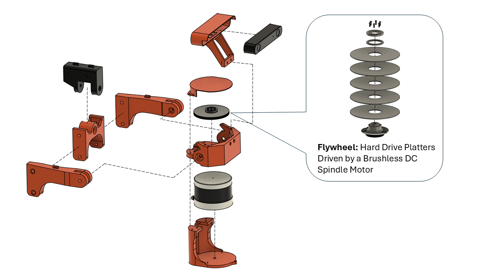

Technical design details for this project are currently withheld while
intellectual property protection is being pursued by the project sponsor.
Outstanding Project — Summer 2026
For my senior design capstone at The University of Texas at Dallas,
my team developed a modular hot tap drilling machine for Mueller Water Products from concept
through fabrication, assembly, and testing.
Our project was selected for the Outstanding Project
award at the Summer 2026 UTD Senior Design Expo.
Subformica
Subformica is an underwater remotely operated vehicle that was designed and built
by the RoboSub club at UT Dallas for the 2025 Marine Advanced Technology Education
(MATE) ROV World Championship. Teams compete in accomplishing tasks designed to
simulate real-world ocean health initiatives. The competition took place in
Alpena, Michigan June 19-21, 2025.
My Role: Mechanical Team Lead
My Contributions
Select a contribution to view design details and additional images.
Chassis
Designed, machined, and assembled the modular chassis integrating
vehicle structure, thrusters, handling features, and tether support.
2 images · View details →
Perhaps my largest contribution, other than management of the overall
design process, was the design of the chassis. It was designed in parallel
with the electronics enclosure and underwent many iterations before
completion. It is constructed primarily of t-slot extrusion and phenolic
panels. Other than the phenolic panels, which were waterjet cut by a
sponsor, the frame was designed, machined, and assembled by me.
Requirement:
Modularity
Solution:
T-slot extrusion provides attachment points anywhere along its length.
Phenolic panels are rigid yet easy to machine in place for additional
mounting options.
Requirement:
Six Degrees of Freedom
Solution:
Thruster mounting positions were placed in a vectored configuration
that allowed for translation and rotation about all axes.
Requirement:
Safe and Ergonomic Handling
Solution:
Two marine-grade handles secured to the structural frame provide
easy-to-identify handling points, preventing damage to the vehicle
and providing an ergonomic way to interact with it.
Requirement:
One-Handed Retrieval
Solution:
Two sleds on the bottom of the frame, machined from nylon, allow the
vehicle to slide along the edge of a dock or pool for easy one-handed
retrieval with minimal lifting.
Requirement:
Tether Strain Relief
Solution:
A stainless rope guide bolted to the rear of the t-slot frame provides
an attachment point for the tether's strain-relief carabiner.
Liquid Sample Extraction Tool
Servo-actuated syringe and repositionable extraction tube designed
to puncture a sealed container and collect a 50 mL sample.
4 images · View details →
One of the tasks in the competition was to extract 50 mL of an unknown
liquid sample from a container on the bottom of the pool that had a
small opening covered in plastic film that needed to be punctured.
The extraction tool was designed, printed, and assembled by me.
Requirement:
Puncture Plastic Film for Extraction
Solution:
A 4 mm diameter stainless steel tube that can be mounted vertically
while in use or horizontally when stowed is attached to the bottom
panel of the ROV near the front. The extraction tube can be quickly
swapped between stowed and in-use positions by sliding it on and off
of a rail. Magnets embedded in the printed material snap it in place,
ensuring that it is secured in either position.
Requirement:
Extraction of 50 mL of Fluid
Solution:
A 60 mL syringe is mounted to the bottom frame of the ROV, where it
attaches to the stainless tube with silicone hose and is actuated by
a servo through a rack-and-pinion mechanism.
Differential Articulation Mechanism
Two-servo differential mechanism providing independent 90° tilt
and rotation of a single object manipulator.
6 images · View details →
Throughout the competition tasks, props could appear in a number of
different orientations. Some teams addressed this with multiple object
manipulators; our team instead chose to develop a single manipulator
capable of both rotation and tilt. Design, production, and assembly
of the mechanism were done by me.
Requirement:
The claw must rotate 90 degrees and tilt 90 degrees
Solution:
A differential gear mechanism allows the claw to tilt by driving the
gears in the same direction and rotate by driving them in opposite
directions.
Requirement:
Use 180-degree servos while allowing simultaneous 90-degree rotation
and tilt
Solution:
Brushless servos capable of greater than 180 degrees of rotation were
prohibitively expensive for the club. Using a 3:4 gear ratio allows
the claw to be both tilted and rotated 90 degrees with only 180 degrees
of rotation from either servo.
Requirement:
Electrical Simplicity
Solution:
The differential gear mechanism uses only two servos that remain
stationary relative to the chassis. Minimizing servo and cable movement
reduces stress on waterproofed electrical connections and lowers the
risk of manipulator failure during competition.
Manipulator Attachments
Quick-change task-specific tooling extended the manipulator's
capabilities without adding permanent weight and drag.
3 images · View details →
Several competition tasks required specialized tooling. Rather than
permanently mounting single-purpose tools to the vehicle, we created
attachments that could be quickly installed and removed from the object
manipulator during a run. This reduced permanent weight, drag, and
vehicle clutter. Both attachments were designed, printed in PETG,
and assembled by me.
Requirement:
Tool-less Installation and Removal
Solution:
Each attachment is secured to one of the manipulator jaws with a custom
printed thumbscrew. A large T-handle allows blind interaction for quick
installation and removal.
Requirement:
Capture and contain a "medusa jellyfish" without grabbing it
Solution:
The medusa catcher uses the object manipulator's jaw actuation to open
and close a container that can then be quickly removed topside for
delivery to the judges. Magnets embedded in the lid and container hold
it to the attachment while still allowing quick removal.
Requirement:
Collect loops attached to a frame floating at the water's surface
Solution:
A surface hook extends above the submerged ROV to collect loops located
at the waterline. A barb at the end prevents collected loops from
falling off while the vehicle maneuvers.
Buoyancy Panels
Sized, machined, and finished passive buoyancy panels to achieve
neutral buoyancy while integrating with the vehicle's packaging.
4 images · View details →
For an underwater vehicle like an ROV, neutral buoyancy is critical
to maneuverability. While an ROV that is not neutrally buoyant can
still operate, continuously compensating for vertical drift makes
precise interaction with task props more difficult. The buoyancy panels
are constructed from Formular 150, skinned in vinyl, and trimmed with
PETG. They were designed, machined, and assembled by me.
Requirement:
Neutral Buoyancy
Solution:
After the rest of the vehicle was complete, I measured the submerged
weight of the ROV using a crane scale. Using the density of Formular
150 foam, I calculated the required panel thickness to compensate for
the vehicle's submerged weight. The foam was cut to profile on a
vertical bandsaw using a template and milled to final thickness on a
manual mill.
Requirement:
Aesthetically Appealing
Solution:
Because the buoyancy panels cover a significant portion of the vehicle,
they also became a major visual element. The pink Formular 150 foam was
covered with black adhesive-backed vinyl and finished with white
3D-printed PETG trim attached using marine-grade adhesive. The finished
panels also provided space for sponsor logos.
Camera Mount
Developed an adjustable prototype mount to optimize camera position
during testing before designing the final rigid bracket.
2 images · View details →
Camera mounting was a crucial part of the ROV's design. Another team
member designed a camera enclosure that allowed the camera to tilt so
the operator could look down at tooling, straight ahead while
maneuvering, or toward the surface when needed. Even with this
articulation, determining the correct mounting location required
testing. I created a two-piece adjustable bracket that allowed the
camera to be repositioned during testing. Once the optimal position
was established, I designed the final rigid bracket shown here.
Mount design, printing, and assembly were done by me.
Machining & Fabrication
Manufactured aluminum and acrylic ROV components using manual
machining, fitting, finishing, and pressure-testing processes.
5 images · View details →
To reduce costs, we manufactured as much of the ROV ourselves as
possible. I had access to a machine shop at my place of work and used
it to manufacture several aluminum and acrylic components for the
vehicle.
Junction Box
I machined the junction box on a manual mill from a solid block of
6061 aluminum. The O-ring gland radii were produced by calculating
16 points on each radius and plunging with an end mill. The gland
was then hand-finished and the enclosure was pressure tested until
a reliable seal was achieved.
Acrylic Enclosure Covers
The acrylic panels were cut to size on a vertical bandsaw and the
hole patterns were drilled on a manual mill.
Electronics Enclosure
I cut the aluminum top and bottom enclosure plates on a cold saw.
I milled the penetrator holes and connection-tube holes into the
aluminum tube that forms the enclosure body.
The top plate was then sent to the university machine shop where
the O-ring gland and hole pattern were CNC milled. A team member
welded the plates and connecting tube to complete the enclosure.
VESPA
VESPA was a remotely operated underwater vehicle designed and built by the RoboSub club
at the University of Texas at Dallas for the 2024 Marine Advanced Technology Education
(MATE) ROV World Championship. Teams compete in accomplishing tasks designed to simulate
real-world ocean health initiatives. The competition took place in Kingsport, Tennessee
June 20-22, 2024. Our team took 3rd place overall in the pioneer class and 1st place for
technical documentation.
My Role: Mechanical Team Member
My Contributions
Select a contribution to view design details and additional images.
Object Manipulator
Three-finger pneumatic manipulator designed to grasp,
center, and move competition task objects.
3 images · View details →
The object manipulator enables VESPA to grasp, move, and release PVC pipes
and hooks during competition tasks. It uses three articulated fingers that
close from multiple directions to center and securely hold objects. A pneumatic
actuator drives all fingers through a linked mechanism, simplifying control
and reducing electrical components.
Requirement:
Securely grasp various sizes of PVC and other task objects
Solution:
A three-finger design surrounds and centers objects, adapting to both
cylindrical and irregular shapes. Features on the surface of the jaws were
designed to interface with task props in the orientations that they would
be interacted with.
Requirement:
Waterproof for underwater operation
Solution:
The pneumatic system is inherently suited for underwater use, with sealed
components and air-driven actuation that prevent water intrusion into
electrical actuators.
Spool Tool
Servo-driven retrieval system that captured floor-level
hooks without requiring the ROV to pitch downward.
4 images · View details →
The spool tool was designed to retrieve competition props with vertical
lifting hooks that rested on the bottom of the pool. Because pitching the
ROV downward to engage these hooks directly was impractical, the tool used
a retractable line to capture the hook while the vehicle remained level.
Once engaged, the line was reeled in to lift the object off the pool floor,
providing better control while maneuvering the vehicle.
Requirement:
Retrieve objects with vertical lifting hooks while keeping the ROV level
Solution:
A servo-driven spool extends a retrieval line beneath the vehicle,
allowing the ROV to sweep across the pool floor until the line captures
the hook.
Requirement:
Prevent the retrieval line from tangling during operation
Solution:
The spool features a helical groove that guides the line into evenly
spaced wraps, ensuring controlled winding and reliable, tangle-free
deployment and retraction.
Requirement:
Ensure controlled unspooling of the retrieval line
Solution:
Evenly spaced stainless steel beads are integrated along the line,
providing consistent spacing and resistance that helps regulate the
rate of deployment and prevents uncontrolled unwinding.
Rotator Tool
Servo-driven valve interface designed to maintain engagement
despite minor vehicle misalignment.
2 images · View details →
The rotator tool was designed to operate valve handles during competition
tasks. Three curved prongs engage the outside of the valve, allowing the
tool to accommodate minor misalignment while maintaining contact throughout
rotation. A waterproofed servo drives the mechanism directly, enabling
controlled valve operation without requiring the ROV to maintain a perfectly
centered position.
Requirement:
Rotate valve handles
Solution:
A servo directly drives the rotating mechanism, providing controlled
and repeatable valve actuation.
Requirement:
Tolerate minor misalignment during engagement
Solution:
Three curved prongs guide and center the valve within the tool,
allowing successful engagement without requiring perfect positioning
of the vehicle.
The topside control box served as the primary interface between the
operator and the ROV. It distributed electrical power, supplied compressed
air to the pneumatic systems, and housed the networking hardware that
connected the pilot's laptop to the vehicle through the tether. In addition
to consolidating these systems into a single enclosure, the control box
incorporated safety features, thermal management, tether support, and
service access to improve reliability during competition.
Requirement:
Provide electrical power and compressed air to the ROV
Solution:
The enclosure integrates power distribution and a pneumatic inlet,
allowing both utilities to be supplied through a single tether connection.
Requirement:
Establish communication between the ROV and the operator
Solution:
An onboard network router provides a direct Ethernet connection between
the pilot's laptop and the ROV for vehicle control and monitoring.
Requirement:
Incorporate emergency shutoff
Solution:
A circuit breaker disconnects electrical power while a manual shutoff
valve isolates the compressed air supply.
Requirement:
Protect the tether from mechanical loads
Solution:
An integrated strain relief transfers cable loads to the enclosure,
preventing tension from being applied directly to the electrical and
pneumatic connections.
Requirement:
Maintain safe operating temperatures for electrical components
Solution:
A forced-air cooling system continuously circulates air through the
enclosure to dissipate heat generated by the electronics.
Requirement:
Allow internal components to be serviced or replaced
Solution:
An internal access lid allows the enclosed components and connections
to be reached without requiring the control box structure to be
disassembled.
LUNA

LUNA was an autonomous surface vehicle developed by UT Dallas' GalaxSea team
for the 2024 RoboBoat Competition. I joined the short-handed mechanical team
near the competition deadline to help stabilize the vehicle's primary vision sensors.
MY CONTRIBUTION
Passive Gyroscopic Sensor Gimbal

I designed and built a passive gyroscopic gimbal to stabilize LUNA's
ZED 2 stereo camera and Velodyne LiDAR against roll and pitch of the boat,
helping provide more consistent sensor data for autonomous navigation.
Gyroscopic Flywheel
I disassembled two hard drives and combined the brushless spindle motor
from one with the platters from both to create a compact, high-speed flywheel.
Its angular momentum resisted rapid changes in the orientation of the sensor platform.
Gimbal Motion
The freely pivoting mount allows the hull to roll and pitch beneath the
sensor platform while the flywheel resists the resulting change in orientation.
Physical Prototype
Testing showed substantially less sensor movement with the flywheel running
than without it, demonstrating the effectiveness of the passive stabilization concept.
Performance & Limitations
The flywheel was undersized for larger disturbances, which could knock the
platform off center and produce a brief oscillation before it settled.
A larger flywheel or higher rotational speed would improve disturbance resistance.
Assembly

Profiling Float
Goal: Explain what a profiling float is.
My role: Designed, manufactured, assembled, programmed.
Reaming Fixtures
Description: Explain how this is the solution to a problem.
Skills: CAD, FDM, Machining
Images: Add CAD images, drawings of machined parts, assembled and holding parts.
Label Placement Fixtures
Description: Explain how this is the solution to a problem.
Skills: CAD, FDM
Images: Add CAD images, drawings of machined parts, assembled and holding parts.
After spending more than a decade in technical sales, manufacturing support, and operations, I decided to go back to school to
pursue a career in mechanical engineering. My previous experience gave me an appreciation for the entire product lifecycle—from
design and manufacturing to customer support—which continues to influence the way I approach engineering problems today.
My professional background includes technical sales, production support, process improvement, fixture design, CAD modeling,
technical documentation, and collaboration between engineering, manufacturing, and customers.
Outside of work and school, I've been heavily involved in hands-on engineering projects. As Mechanical Team Lead for UTD's underwater robotics
team, I helped design and build remotely operated vehicles for the Marine Advanced Technology Education (MATE) ROV World Championship.
When I'm not working on engineering projects, I tend to spend my time exploring new tools and ideas, often through hands-on
experimentation. I've always enjoyed taking things apart, learning how they work, and solving problems that I don't already know the
answer to. Few things are more satisfying to me than spending hours on a difficult problem and finally reaching the point where everything
clicks.
This portfolio highlights some of the projects that have shaped my development as an engineer and reflects the way I enjoy learning: by
building, experimenting, and figuring things out.